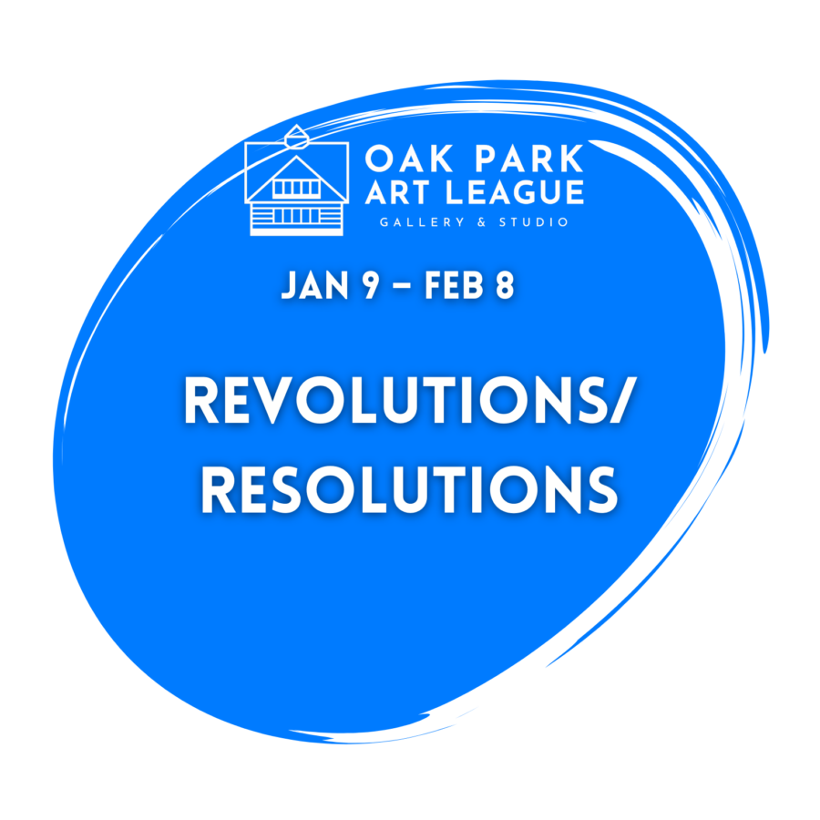

Revolutions/Resolutions
Join us for the reception for the Oak Park Art League’s first exhibition of 2026 Revolutions/Resolutions Exhibition in the Carriage House Gallery
Art has always been a compass for navigating uncertainty. Help us map the territory between renewal and resolution. As we complete another revolution around the sun, we find ourselves at the threshold of new beginnings while carrying the weight of unfinished business.
This moment—suspended between what was and what could be—invites artistic exploration of transformation, persistence, and purposeful redirection.
EXHIBITING ARTISTS
Elaine Luther, Anna Bretschneider, George T. Chakos, Sandra Ferguson, Christine Anne Steyer, Anne Nacht Morgan, Maria Gedroc, MJ Keitel, Dave Ottens, Ana Vitek, Peter Bialecki, Keisha-Marie Alridge, Crystal Beach, Pamela Penney, Peggy Dee, Teri Nalbone, Kathleen Duda, Terry Clarbour, Caroline McIlroy, Gayle Ronan, Rachel Zargo, Marion Sirefman, Charles Simone, Andy Swindler, Daphne LeCesne, Scribblz
In addition we welcome young artists at By Discovery exhibiting micro art galleries
Revolutions/Resolutions Exhibition
Jan 9 – Feb 8, 2026